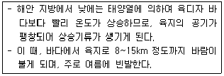
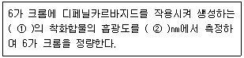
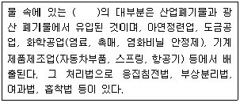
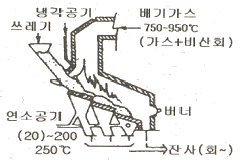
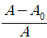
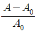
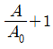
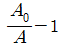
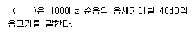

환경기능사 (2011-04-17 기출문제)
1과목: 대기오염방지
1. 중력집진장치에서 먼지의 침강속도 산정에 관한 설명으로 옳지 않은 것은?
- 중력가속도에 비례한다.
- 입경의 제곱에 비례한다.
- 먼지와 가스의 비중차에 반비례한다.
- 가스의 점도에 반비례한다.
(정답률: 82%)

2. NO 가스를 산화흡수법으로 제거시키고자 한다. 이 방법의 산화제로 적합하지 않은 것은?
- CO
- O3
- KMnO4
- NaCIO2
(정답률: 51%)
3. 집진율이 각각 90%와 98%인 두 개의 집진장치를 직렬로 연결하였다. 1차 집진장치 입구의 먼지농도가 5.9g/m3일 경우 2차 집진장치 출구에서 배출괴는 먼지 농도는?
- 11.8mg/m3
- 15.7mg/m3
- 18.3mg/m3
- 21.1mg/m3
(정답률: 53%)
4. 유해가스를 배출시키기 위해 설치한 가로 30㎝, 세로 50㎝인 직사각형 송풍관의 상당직경(De)은?
- 37.5㎝
- 38.5㎝
- 39.5㎝
- 40.0㎝
(정답률: 37%)
5. 대기환경보전법상 용어의 정의로 옳지 않은 것은?
- “기후ㆍ생태계 변화유발물질”이란 지구 온난화 등으로 생태계의 변화를 가져올 수 있는 기체상물질로서 온실가스와 환경부령으로 정하는 것을 말한다.
- “매연”이란 연소할 때에 생기는 유리탄소가 주가 되는 미세한 입자상물질을 말한다.
- “먼지”란 대기 중에 떠다니거나 흩날려 내려오는 입자상물질을 말한다.
- “온실가스”란 자외선 복사열을 흡수하여 온실효과를 유발하는 대기 중의 가스상태 물질로서 이산화탄소, 메탄, 아산화탄소, 수소불화탄소, 과불화탄소, 육불화황을 말한다.
(정답률: 59%)
6. 탄소 12kg 이 완전연소 하는데 필요한 이론 공기량(Sm3)은?
- 22.4
- 32.4
- 86.7
- 106.7
(정답률: 40%)
7. 대기오염공정시험기준상 굴뚝 배출가스 중 질소산화물의 연속자동 측정방법이 아닌 것은?
- 용액전도율법
- 적외선흡수법
- 자외선흡수법
- 화학발광법
(정답률: 56%)
8. 다음 중 헨리법칙이 가장 잘 적용되는 기체는?
- O2
- HCI
- SO2
- HF
(정답률: 62%)
9. <보기>에 해당하는 국지풍은?

- 해풍
- 육풍
- 산풍
- 국풍
(정답률: 86%)
10. 메탄 1mol 이 완전연소 할 경우 건조연소 배기가스 중의 CO2 농도는 몇 %인가? (단, 부피기준)
- 11.73
- 16.25
- 21.03
- 23.82
(정답률: 35%)
11. 대기 중 광화학반응에 의한 광화학 스모그가 잘 발생하는 조건으로 가장 거리가 먼 것은?
- 일사량이 클 때
- 역전이 생성될 때
- 대기 중 반응성 탄화수소, NOx, O3 등의 농도가 높을 때
- 습도가 높고, 기온이 낮은 아침일 때
(정답률: 75%)
12. 다음 업종 중 불화수소가 주된 배출원에 해당하는 것은?
- 고무가공, 인쇄공업
- 인산비료, 알루미늄제조
- 내연기관, 폭약제조
- 코우크스 연소로, 제철
(정답률: 82%)
13. A집진장치의 집진효율은 99%이다. 이 집진시설 유입구의 먼지농도가 13.5g/Sm3일 때, 집진장치의 출구농도는?
- 0.0135g/Sm3
- 135mg/Sm3
- 1350mg/Sm3
- 13.5g/Sm3
(정답률: 50%)
14. 다음 흡수장치 중 장치내의 가스속도를 가장 크게 해야하는 것은?
- 분무탑
- 벤츄리스크러버
- 충진탑
- 기포탑
(정답률: 82%)
15. 기체연료를 버너노즐로 분출시켜 외부공기와 혼합하여 연소시키는 방법은?
- 확산 연소법
- 사전혼합 연소법
- 화격자 연소법
- 미분탄 연소법
(정답률: 58%)
2과목: 폐수처리
16. 침사지에서 폐수의 평균유속이 0.3m/s, 유효수심이 1.0m, 수면적 부하가 1800m3/m2ㆍd일 때, 침사지의 유효길이는?
- 20.2m
- 14.4m
- 10.6m
- 7.5m
(정답률: 52%)
17. A폐수를 활성탄을 이용하여 흡착법으로 처리하고자 한다. 폐수 내 오염물질의 농도를 30mg/L에서 10mg/L로 줄이는데 필요한 활성탄의 양은? (단, X/M=KC1/n 사용, K=0.5, n=1)
- 3.0 mg/L
- 3.3 mg/L
- 4.0 mg/L
- 4.6 mg/L
(정답률: 55%)
18. 염소를 이용하여 살균할 때 주입된 염소량과 남아있는 염소량과의 차이를 무엇이라 하는가?
- 염소요구량
- 유리염소량
- 잔류염소량
- 클로라민
(정답률: 56%)
19. 다음 중 황산(1+2) 혼합용액은?
- 물 1mL에 황산을 가하여 전체 2mL로 한 용액
- 황산 1mL를 물에 희석하여 전체 2mL로 한 용액
- 물 1mL와 황산 2mL를 혼합한 용액
- 황산 1mL와 물 2mL를 혼합한 용액
(정답률: 63%)
20. 다음은 수질오염공정시험기준상 6가 크롬의 흡광광도법 측정원리이다. ( )안에 알맞은 것은?(시험 범위 개정전 문제로 기존정답은 2번입니다. 참고용으로만 사용하세요.)

- ① 적자색, ② 253.7
- ① 적자색, ② 540
- ① 청색, ② 253.7
- ① 청색, ② 540
(정답률: 79%)
21. 다음 ( )안에 가장 적합한 수질오염물질은?

- 수은
- 페놀
- PCB
- 카드뮴
(정답률: 59%)
22. 폐수처리장에서 개방유로의 유량측정에 이용되는 것으로 단면의 형상에 따라 삼각, 사각 등이 있는 것은?
- 확산기(diffuser)
- 산기기(aerator)
- 위어(weir)
- 피토전극기(pitot electrometer)
(정답률: 82%)
23. 7000m3/day의 하수를 처리하는 침전지의 유입하수의 SS농도가 400mg/L, 유출하수의 SS농도가 200mg/L이라면 이 침전지의 SS제거율은?
- 3%
- 25%
- 50%
- 70%
(정답률: 62%)
24. 다음 중 응집침전을 위한 폐수처리에서 일반적으로 가장 널리 사용되는 응집제는?
- 염화칼슘
- 석회
- 수산화나트륨
- 황산알루미늄
(정답률: 48%)
25. 산도(acidity)나 경도(hardness)는 무엇으로 환산하는가?
- 염화칼슘
- 수산화칼슘
- 질산칼슘
- 탄산칼슘
(정답률: 78%)
26. BOD, SS의 제거율이 비교적 높고, 악취나 파리의 발생이 거의 없고, 설치면적은 적게 드나, 슬러지 팽화의 문제점이 있고, 슬러지 생성량이 비교적 많은 생물학적 처리방법은?
- 활성슬러지법
- 회전원판법
- 산화지법
- 살수여상법
(정답률: 73%)
27. 다음 중 회분식 배양조건에서 시간에 따른 박테리아의 성장곡선을 순서대로 옳게 나열한 것은?
- 유도기→사멸기→대수성장기→정지기
- 유도기→사멸기→정지기→대수성정기
- 대수성장기→정지기→유도기→사멸기
- 유도기→대수성장기→정지기→사멸기
(정답률: 79%)
28. 효과적인 응집을 위해 실시하는 약품교반 실험장치(jar tester)의 일반적인 실험순서가 바르게 나열된 것은?
- 정치 침전 → 상징수 분석 → 응집제 주입 → 급속 교반 → 완속 교반
- 급속 교반 → 완속 교반 → 응집제 주입 → 정치 침전 → 상징수 분석
- 상징수 분석 → 정치 침전 → 완속 교반 → 급속 교반 → 응집제 주입
- 응집제 주입 → 급속 교반 → 완속 교반 → 정치 침전 → 상징수 분석
(정답률: 76%)
29. 다음 중 BOD 600ppm, SS 40ppm인 폐수를 처리하기 위한 공정으로 가장 적합한 것은?
- 활성슬러지법
- 역삼투법
- 이온교환법
- 오존소화법
(정답률: 78%)
30. 염산(HCI) 0.001 mol/L의 pH는? (단, 이 농도에서 염산은 100% 해리한다.)
- 2
- 2.5
- 3
- 3.5
(정답률: 58%)
31. 자연수에 존재하는 다음 이온 중 알칼리도를 유발하는데 가장 크게 기여하는 것은?
- OH-
- CO32-
- HCO3-
- NH4+
(정답률: 60%)
32. 상수도계획시 여과에 관한 설명으로 옳지 않은 것은?
- 완속여과를 채용할 경우 색도, 철, 망간도 어느 정도 제거된다.
- 완속여과는 생물막에 의한 세균, 탁질제거와 생화학적 산화반응에 의해 다양한 수질인자에 대응 할 수 있다.
- 급속여과의 여과속도는 70~90m/d를 표준으로 하고, 침전은 필수적이나, 약품사용은 필요치 않다.
- 급속여과는 탁도 유발물질의 제거효과는 좋으나 세균은 안심할 정도로의 제거는 어려운 편이다.
(정답률: 69%)
33. 물 분자가 극성을 가지는 이유로 가장 적합한 것은?
- 산소와 수소의 원자량의 차
- 산소와 수소의 전기음성도의 차
- 산소와 수소의 끓는점의 차
- 산소와 수소의 온조 변화에 따른 밀도의 차
(정답률: 74%)
34. 시간당 200m3의 폐수가 유입되는 침전조의 위어(weir)의 유효길이가 50m 라면 월류부하는?
- 2m3/mㆍh
- 4m3/mㆍh
- 8m3/mㆍh
- 15m3/mㆍh
(정답률: 67%)
35. 유기물질의 질산화 과정에서 아질산이온(NO2-)이 질산이온(NO3-)으로 변할 때 주로 관여하는 것은?
- 디프테리아
- 니트로박터
- 니트로조모나스
- 카로티노모나스
(정답률: 65%)
3과목: 폐기물처리
36. 폐기물 파쇄 전후의 입자크기와 입자크기분포를 이해하는 것은 폐기물 특성을 파악하는데 매우 중요하다. 대표적으로 사용하는 특성입경은 입자의 무게기준으로 몇%가 통과할 수 있는 체 눈의 크기를 말하는가?
- 36.8%
- 50%
- 63.2%
- 80.7%
(정답률: 48%)
37. 다음 중 내륙매립 공법의 종류가 아닌 것은?
- 도랑령공법
- 압축매립공법
- 샌드위치공법
- 박층뿌림공법
(정답률: 78%)
38. 매립처분시설의 분류 중 폐기물에 포함된 수분, 폐기물 분해에 의하여 생성되는 수분, 매립지에 유입되는 강우에 의하여 발생하는 침출수의 유출방지와 매립지 내부로의 지하수 유입방지를 위해 설치하는 것은?
- 부패조
- 안정탑
- 덮개시설
- 차수시설
(정답률: 73%)
39. 침출수를 혐기성 여상으로 처리하고자 한다. 유입유량이 1000m3/day 이고, BOD가 500mg/L, 처리효율이 90%라면 이 때 혐기성 여상에서 발생되는 메탄가스의 양은? (단, 1.5m3 가스/BOD kg, 가스 중 메탄함량 60%)
- 350m3/day
- 4⑤m3/day
- 510m3/day
- 550m3/day
(정답률: 46%)
40. 하부에서 뜨거운 가스로 모래를 가열하여 부상시키고, 상부에서는 폐기물을 주입하여 소각시키는 형태의 소각로는?
- 액체 주입형 소각로
- 화격자 소각로
- 회전형 소각로
- 유동상 소각로
(정답률: 80%)
41. 어느 슬러지건조상의 길이가 40m 이고, 폭은 25m 이다. 여기에 30㎝ 깊이로 슬러지를 주입할 때 전체 건조기간 중 슬러지의 부피가 70% 감소하였다면 건조된 슬러지의 부피는 몇 m3 가 되겠는가?
- 50m3
- 70m3
- 90m3
- 110m3
(정답률: 48%)
42. 슬러지 내의 수분을 제거하기 위한 탈수 및 건조방법에 해당하지 않는 것은?
- 산화지법
- 슬러지 건조상법
- 원심분리법
- 벨트프레스법
(정답률: 64%)
43. 1792500ton/year의 쓰레기를 2725명의 인부가 수거하고 있다면 수거인부의 수거능력(MHT)은? (단, 수거인부의 1일 작업시간은 8시간, 1년 작업일수는 310일 이다.)
- 2.16
- 2.95
- 3.24
- 3.77
(정답률: 51%)
44. 아래 그림과 같이 쓰레기를 대량으로 간편하게 소각처리하는데 적합하고, 연속적인 소각과 배출이 가능한 소각호의 형태는?

- 스토커식
- 유동상식
- 회전로식
- 분무연소식
(정답률: 67%)
45. 일정기간 동안 특정지역의 쓰레기 수거차량의 댓수를 조사하여 이 값에 밀도를 곱한 후 중량으로 환산하여 폐기물 발생량을 산정하는 방법을 무엇이라 하는가?
- 직접계근법
- 적재차량계수분석법
- 간접계근법
- 대수조사법
(정답률: 81%)
46. 폐기물 고체연료(RDF)의 구비조건으로 옳지 않은 것은?
- 열량이 높을 것
- 함수율이 높을 것
- 대기 오염이 적을 것
- 성분 배합률이 균일할 것
(정답률: 83%)
47. 소각로를 설계할 때 가장 기본이 되는 폐기물 발열량인 고위발열량(HHV)과 저위발열량(LHV)과의 관계로 옳은 것은? (단, 발열량의 단위는 kcal/kg, 는 수분함량 %이며, 수소함량은 무시한다.)
- LHV = HHV + 6W
- LHV = HHV – 6W
- HHV = LHV + 9W
- HHV = LHV – 9W
(정답률: 61%)
48. 폐기물의 파쇄작용이 일어나게 되는 힘의 3종류와 가장 거리가 먼 것은?
- 압축력
- 전단력
- 원심력
- 충격력
(정답률: 74%)
49. 폐기물을 파쇄시키는 목적으로 적합하지 않은 것은?
- 분리 및 선별을 용이하게 한다.
- 매립 후 빠른 지반침하를 유도한다.
- 부피를 감소시켜 수송효율을 증대시킨다.
- 비표면적이 넓어져 소각을 용이하게 한다.
(정답률: 45%)
50. 다음 중 일반적인 슬러지 처리 계통도로 가장 적합한 것은?
- 슬러지 → 농축 → 개량 → 탈수 → 소각 → 매립
- 슬러지 → 소화 → 탈수 → 개량 → 농축 → 매립
- 슬러지 → 탈수 → 건조 → 개량 → 소각 → 매립
- 슬러지 → 개량 → 탈수 → 농축 → 소각 → 매립
(정답률: 74%)
51. 다음 중 분뇨수거 및 처분계획을 세울 때 계획하는 우리나라 성인 1인당 1일 분뇨배출량의 평균범위로 가장 적합한 것은?
- 0.2 ~ 0.5 L
- 0.9 ~ 1.1 L
- 2.3 ~ 2.5 L
- 3.0 ~ 3.5 L
(정답률: 76%)
52. 파쇄하였거나 파쇄하지 않은 폐기물로부터 철분을 회수하기 위해 가장 많이 사용되는 폐기물 선별방법은?
- 공기선별
- 스크린선별
- 자석선별
- 손선별
(정답률: 81%)
53. 관거(Pipe-line)를 이용한 폐기물 수거방법에 관한 설명으로 가장 거리가 먼 것은?
- 폐기물 발생빈도가 높은 곳이 경제적이다.
- 가설 후에 경로변경이 곤란하다.
- 25km 이상의 장거리 수송에 현실성이 있다.
- 큰 폐기물은 파쇄, 압축 등의 전처리를 해야 한다.
(정답률: 78%)
54. 연료를 연소시킬 때 실제 공급된 공기량을 A, 이론 공기량을 A0 라 할 때 과잉공기율을 옳게 나타낸 것은?




(정답률: 63%)
55. 에탄가스 1Sm3의 완전연소에 필요한 이론 공기량은?
- 8.67Sm3
- 10.67Sm3
- 12.67Sm3
- 16.67Sm3
(정답률: 31%)
4과목: 소음 진동학
56. A벽체의 투과손실이 32dB 일 때, 이 벽체의 투과율은?
- 6.3×10-4
- 7.3×10-4
- 8.3×10-4
- 9.3×10-4
(정답률: 57%)
57. <보기>는 소음의 표현이다. ( )안에 알맞은 것은?

- SIL
- PNL
- Sone
- NNI
(정답률: 68%)
58. 금속스프링의 장점이라 볼 수 없는 것은?
- 환경요소(온도, 부식, 용해 등)에 대한 저항성이 크다.
- 최대변위가 허용된다.
- 공진시에 전달율이 매우 크다.
- 저주파 차진에 좋다.
(정답률: 48%)
59. 인체 귀의 구조 중 고막의 진동을 쉽게 할 수 있도록 외이와 중이의 기압을 조정하는 것은?
- 고막
- 고실창
- 달팽이관
- 유스타키오관
(정답률: 66%)
60. 음향출력 100W인 점음원이 반자유공간에 있을 때 10m 떨어진 지점의 음의 세기(W/m2)는?
- 0.08
- 0.16
- 1.59
- 3.18
(정답률: 47%)